Every screenshot below is captured by the e2e suite from the real built
extension (e2e/screenshots.spec.ts) against a hermetic mock network.
No key appears anywhere; regenerate any time with
npx playwright test e2e/screenshots.spec.ts. Every surface is shown in both
colour schemes. The three *-store.png files the same run produces are not
figures: they are the store-aspect captures scripts/frame-store-shots.mjs
composes into the 1280x800 listing screenshots.
The toolbar mark
Six states, three redundant channels. Band is encoded in ring
color, badge shape, and ring style, so hue is never the only signal. The filled red
plate is reserved for evidenced-malicious. UNKNOWN is the honest common state.
The popup panel
The panel answers three questions and nothing else: is this site safe,
am I protected right now, and what has Guard actually done. The verdict is the headline
and is said exactly once; coverage sits with the evidence rather than beside the verdict,
where a second badge reads as a grade.
Evidenced-malicious. One badge, one sentence carrying the
graph's own label, then the evidence: who runs it, where it sits, and the named weighted
feeds behind the score. The heading counts the threat feeds so the list does not have to
be summarised again underneath itself.No known threat. Said once. "Nothing in the graph lists this
site" is a claim about what was checked, which is stronger than a disclaimer; the
known-clean coverage line below says how much the graph knows, and that it is not a
safety score.UNKNOWN, the honest common state. Slate, not green:
"not confirmed safe or unsafe" is the truth for most of the web. Where the graph cannot
name the operator the panel says "not identified" rather than echoing the hostname back
as if it were an answer.Keyless, the on-device hero. A look-alike of paypal.com caught
entirely in the browser; one tap goes to the real site. Shown with the live check off, so the
on-device detector is the whole story.The why. whisper.explain with feed listings and dates,
rendered only when the graph supplies them.Look-alike neighborhood. Candidates generated on-device,
each confirmed against the graph; confirmed, not guesses.
One control puts this browser on the network
Reserving this browser's routable identity and routing its traffic through
that identity used to be two steps in two surfaces. It is one button now, which asks for the
permission routing needs at the moment it needs it. Every capture below is taken by
e2e/protect.spec.ts, which proves the state it shows: the routed one really
carries traffic through the egress endpoint, and the two refusals really keep the identity.
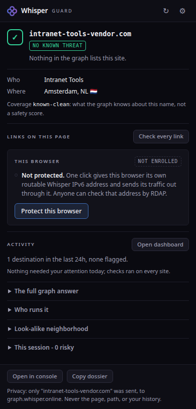
Offered. One control, and it is the only primary action on
the panel. The chip says what this browser is on the network; the line says what it is
doing.
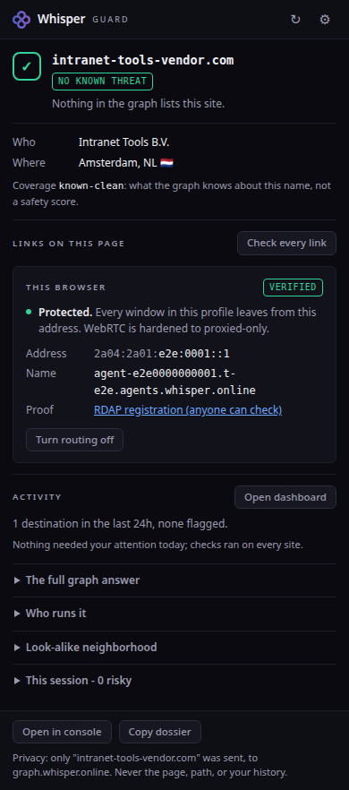
Protected. Address, reverse-DNS name, and the public RDAP
registration anyone can check. The /128 is drawn the way the Whisper console draws every
identity: the /32 every Whisper endpoint shares recedes, and the part that is only this
browser's stays in full ink. WebRTC is hardened to proxied-only on Chromium, and the same
button turns it off.
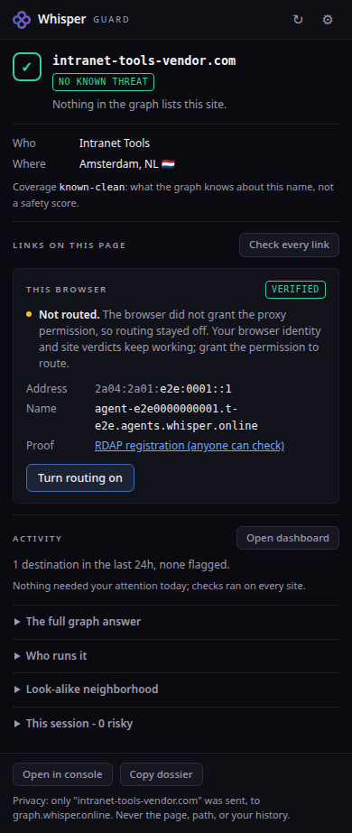
Permission refused. The identity still stands, verified,
with its proof link. The refusal cost the routing and only the routing, and the panel
names it instead of failing quietly.
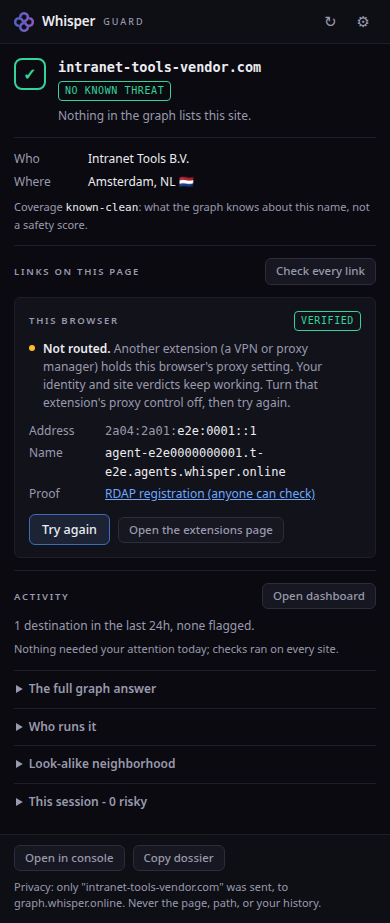
Proxy taken. A VPN or proxy manager holds the browser's
single-owner proxy setting. Named in plain words, with the page that fixes it one click
away, and the identity untouched.
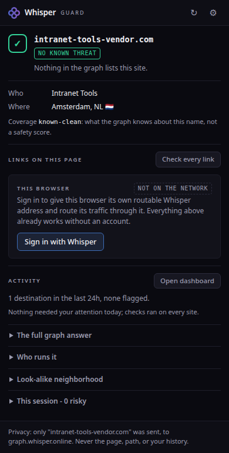
Signed out. One action, and an honest sentence about what it
unlocks. Everything above it already works without an account.
Every surface, in daylight
Every surface follows the reader's system preference, not just the panel.
The structure, the hierarchy and every meaning are the same; the ground and the ink swap,
and the verdict hues darken rather than change identity, because a red that reads as red on
black is pink on white. The lockup is the mark plus an ink wordmark, so it survives a light
ground rather than vanishing into it. The full-page stop stays a red room in daylight
because its ground is mixed from the verdict colour itself. Contrast is measured on what
actually renders, composited against the real ground behind it, in both schemes
(e2e/theme.spec.ts) - which is how the shared quiet ink was caught landing at
4.49:1 on the interstitial's tinted ground, one hundredth under the floor.
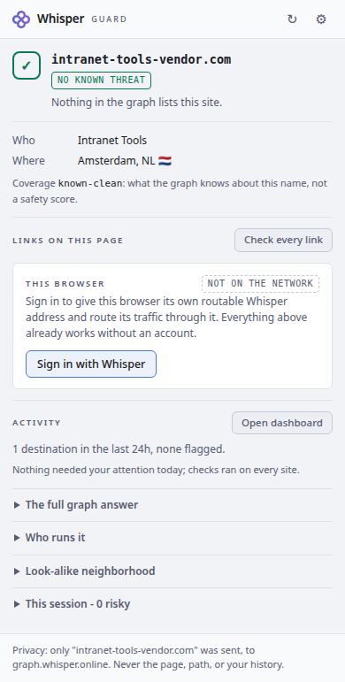
The panel, signed out.
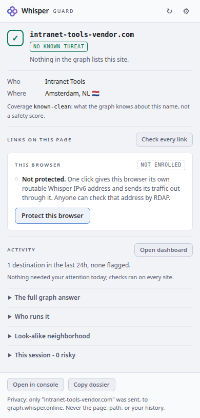
The panel, offering the one control.
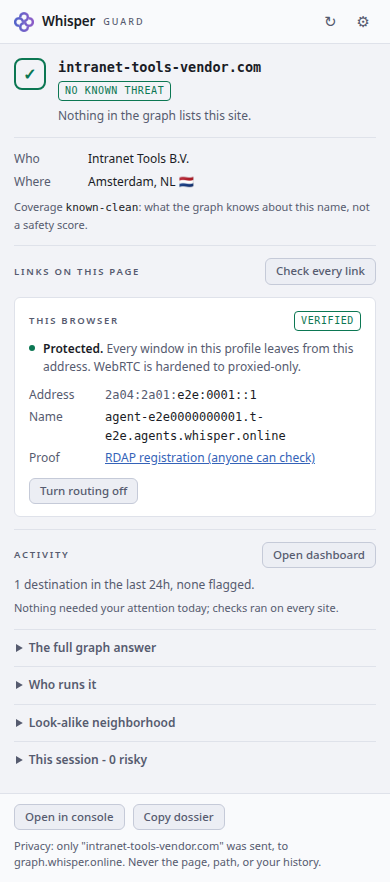
The panel, protected.
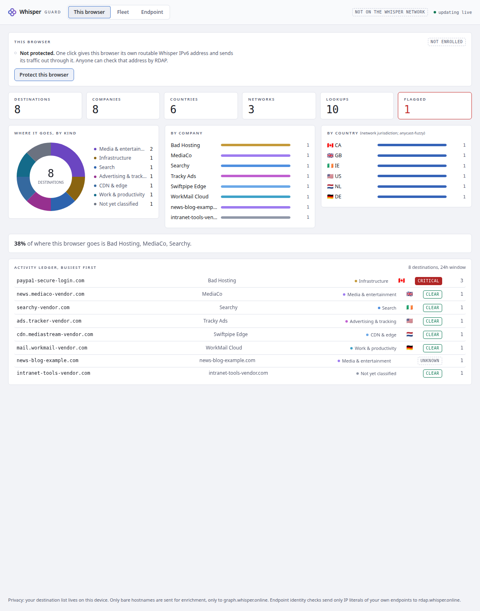
The dashboard. The same donut, tiles and ledger, in daylight;
the charts are canvases and read the same tokens as everything else, so they repaint when
the scheme flips instead of staying dark.
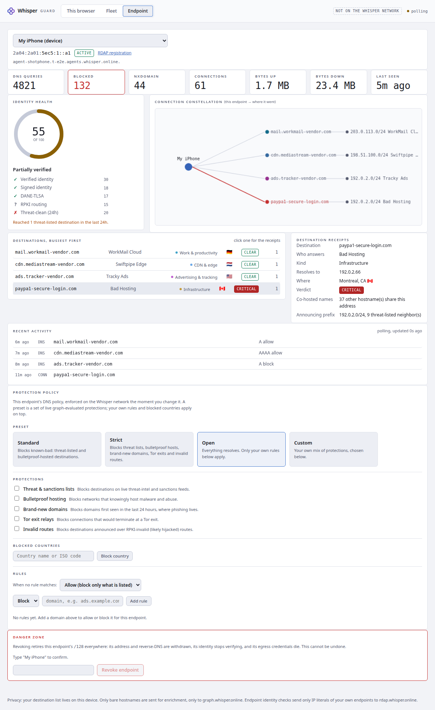
The per-endpoint drill-down. Identity health and the
connection constellation, both drawn from the shared palette.
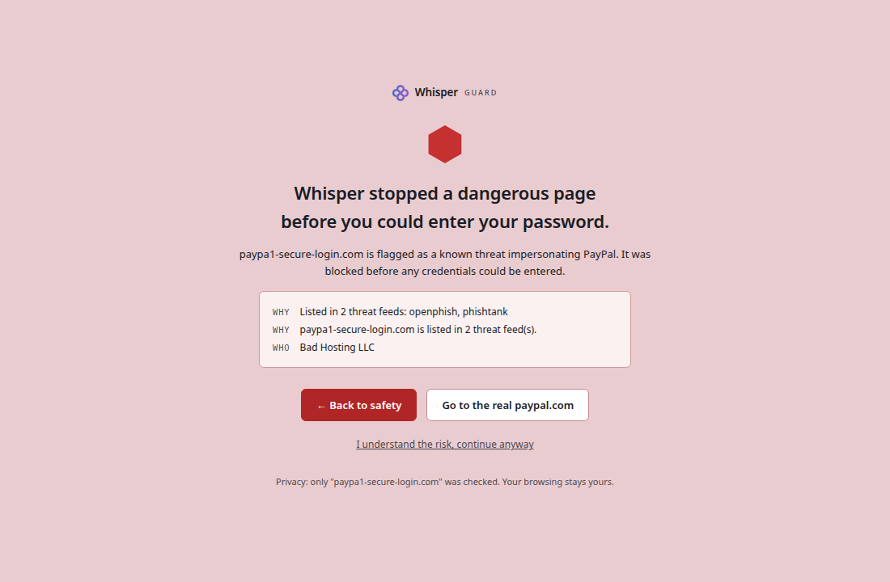
The full-page stop. Still a red room.
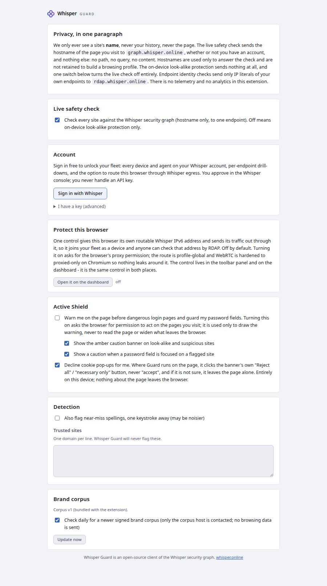
Settings.
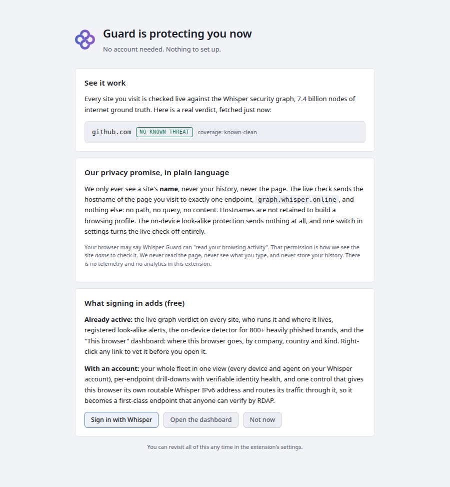
First run.
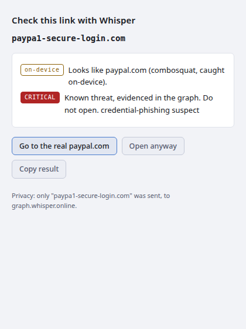
The pre-click check window.
The dashboard: where your devices go
This browser (keyless keystone). The destinations this browser
navigated to, enriched through the graph into who answers, what kind, which country and
network, and a reconciled verdict. Tiles, a category donut, company and country breakdowns,
a concentration callout, and an activity ledger that updates live per navigation. Works with
no account; only bare hostnames are sent, only to the graph.Fleet total (signed in). Every device and agent on your Whisper
account in one view: roster, merged last-24h destinations across the fleet, the same panels,
and an honest polling feed labelled "updated Ns ago".Per-endpoint drill-down (signed in). Live counters, an
explainable identity-health score (each factor met/unmet/unknown, never a black box), the
connection constellation from the endpoint to where it went, and destination receipts with
co-hosting fan-in and announcing-prefix threat neighbours, straight from the graph. An RDAP
provenance link anchors every identity.Protect this browser (opt-in, off by default). The dashboard
mounts the SAME control as the panel, from the same module: same words, same states, same
failures, plus the one affordance that belongs to this surface, because the browser is a
fleet endpoint like any other. WebRTC hardened to proxied-only; the honest limits are
stated in place.
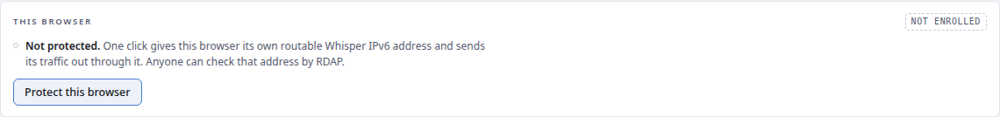
The same control, in daylight. Offered, not yet taken: this
browser has no Whisper identity in either capture, which is what a signed-in reader sees
before the one click. The enrolled state, with its address and RDAP proof, is in the panel
captures above.
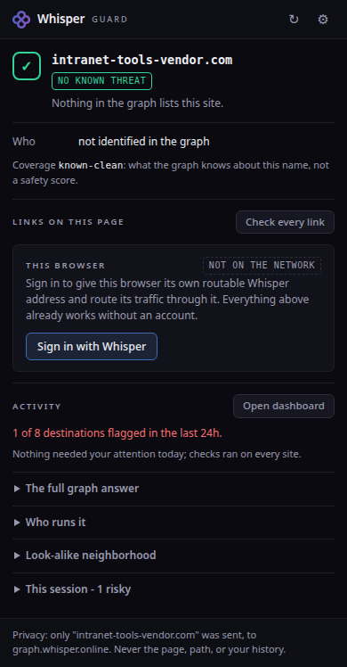
The panel's activity line. The four-tile summary became one
sentence: the only number on it a reader can act on is how many destinations were flagged,
and the full view is one click away.
Before you click, before you type
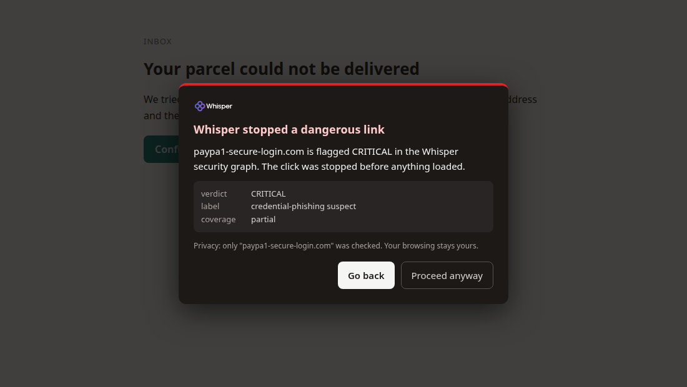
The click is held, not mourned. A link leaving for another
registrable domain (or a form posting off-origin) is caught in the capture phase and the
target hostname is vetted first. On evidenced malice the page stops and shows its receipts;
the target was never contacted. Only the bare hostname was checked, and no broad host
permission is needed: the guard arms wherever the browser already lets Guard run, including
the one tab you invoked it on.Pre-click check. Right-click any link: the destination is
vetted before anything loads. The truly pre-autofill surface. This one shot serves for
signed-out and signed-in alike, because the graph band on this surface is keyless: the
capture run takes it both ways and the two are byte-identical, so showing it twice would
be claiming a difference that is not there.The full-page stop (Active Shield, evidenced-malicious only).
Back to safety always works; continue-anyway is one honest click, never a trap.The amber banner never blocks. Injected only on flagged hosts,
only after the Active Shield opt-in, rendered in a closed shadow root.The password-field caution. Focusing a password field on a
flagged site draws one plain warning next to the field.
What it handled, quietly
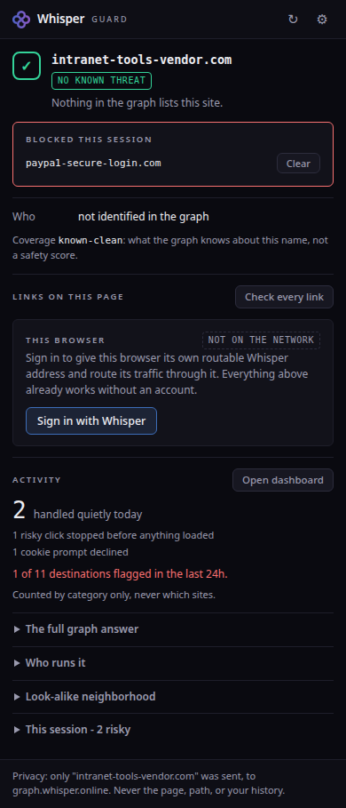
Counted, never announced. Held clicks, verified identities and
declined cookie prompts land in one calm line in the panel, shown on your own click. There is
no toast anywhere: the extension holds no notifications permission at all. The record is a
category and a count, keyed by today's date, so it resets on its own and can never learn a
site you visited. Above it, the host whose click was just held, listed with a one-click
clear so a session block is never a dead end.
First run and settings
First run. Two cards, no config, no account wall: the privacy
promise in plain language and the honest scope. Protection is already on.Settings. Sensible defaults, rarely touched. Sign-in is the
device flow; the paste-a-key fallback stays collapsed. No key on screen.
Whisper Guard is the client of the Whisper security graph:
only a site's hostname is ever checked, never the page, never your history.